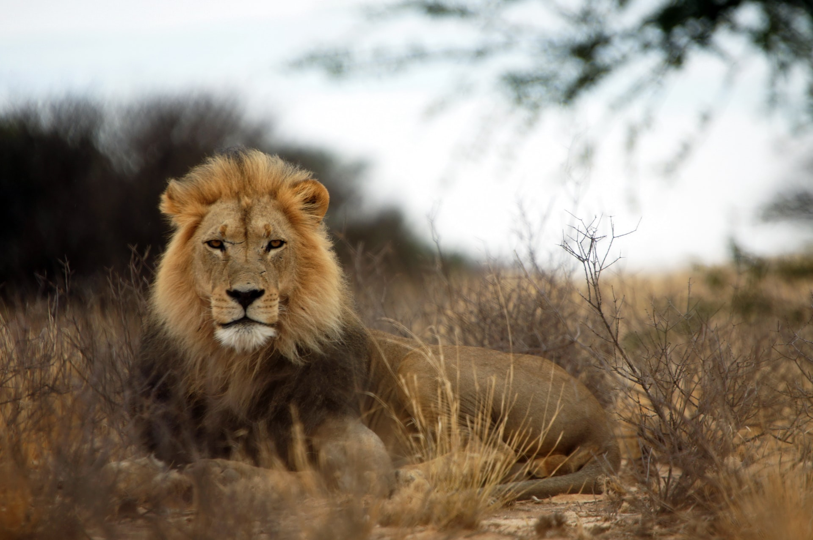
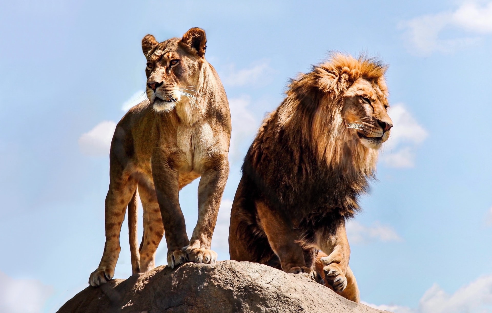
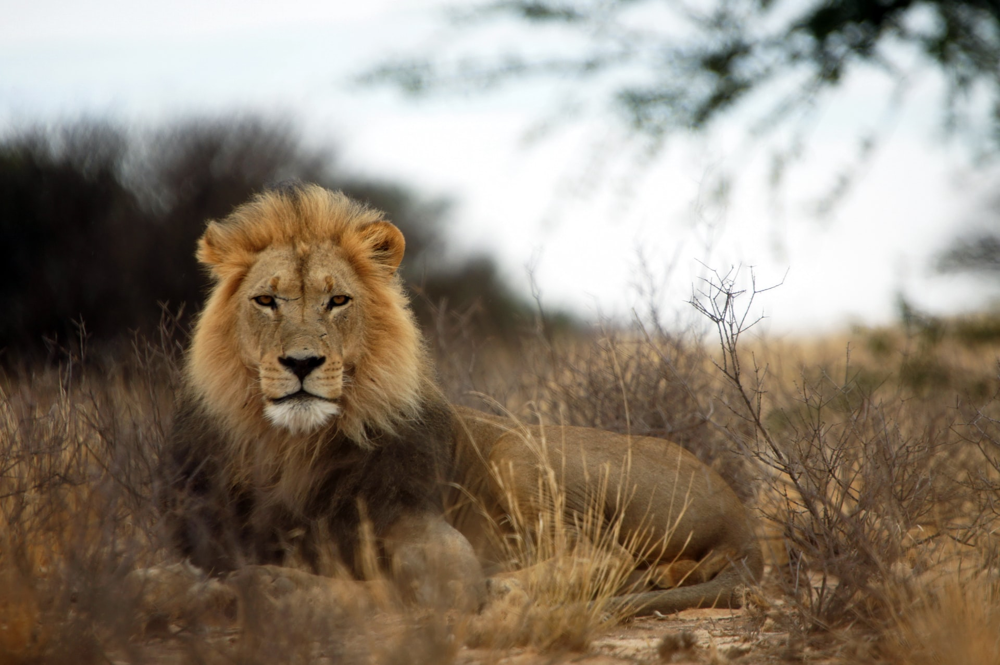
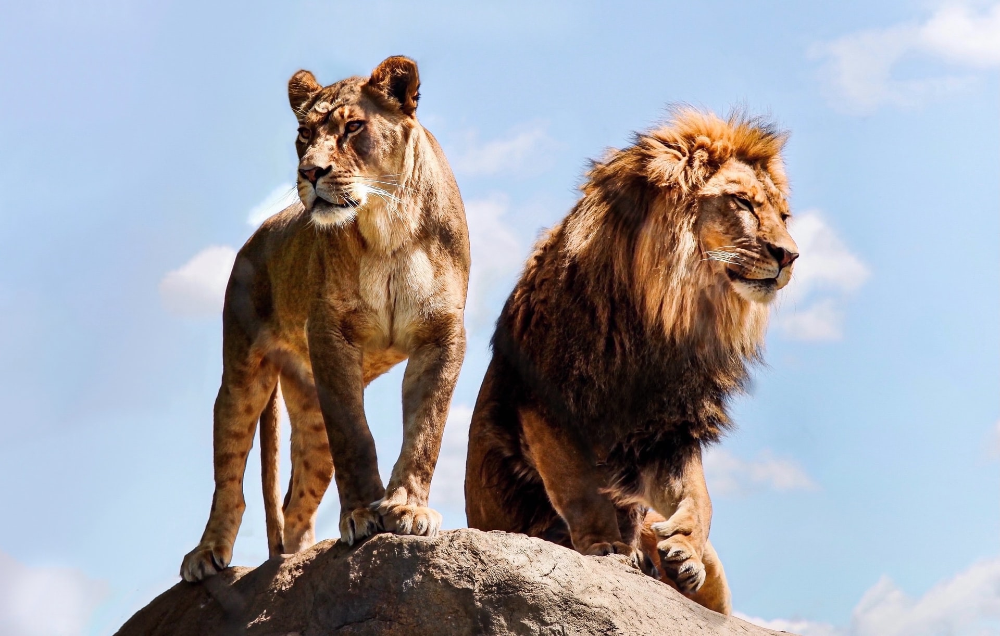

Projekt 1
Lion
Where do the lions live?
Lions live in grasslands and savannas. We can find them in Africa and India.
What do lions eat?
- Zebras
- Pigs
- Giraffes
- Antelope
- Cape buffalo
More info and photos
 The lion is a large cat of the genus Panthera native to Africa and India. It has a muscular, deep chested body and a hairy tuft at the end of its tail. They live in groups. The lion is an apes and keystone predator. Typically, the lion inhabits grassland and savannas. Lions adapt to being active at night and at twilight. Its fur varies in colour from light buff to silvery grey, yellowish red and dark brown. Males have a mane that grows covering most of the head, neck, shoulders, and chest. The lion prefers grassy plains and savannahs, scrub bordering rivers and open woodlands with bushes. Lions spend much of their time resting. They are inactive for about twenty hours per day.
The lion is a large cat of the genus Panthera native to Africa and India. It has a muscular, deep chested body and a hairy tuft at the end of its tail. They live in groups. The lion is an apes and keystone predator. Typically, the lion inhabits grassland and savannas. Lions adapt to being active at night and at twilight. Its fur varies in colour from light buff to silvery grey, yellowish red and dark brown. Males have a mane that grows covering most of the head, neck, shoulders, and chest. The lion prefers grassy plains and savannahs, scrub bordering rivers and open woodlands with bushes. Lions spend much of their time resting. They are inactive for about twenty hours per day.
Interesting videos
Documentary
Life of the lion
Made by Ermi